——《传道书》4:9
整数2通常与成对或加倍有关，我们可以看到多个对象是如何相互关联的，这其中包括贝亚蒂序列和若尔当曲线定理的例子。另外我们还将看到整数2出现在与幂和素数有关的美丽定理中。你需要付出一些努力才能理解这个数所构成的神奇关系，但不要担心，你不会事倍功半。
若尔当曲线定理和奇偶校验
数学家们确信定理一旦被证明，就会一直成立。已经确证的结果不会被新的风尚或新的发现所证否。那么什么样的命题能够被提出？又有哪些需要证明呢？若尔当曲线定理看上去显而易见，然而证明却相当复杂。这个定理说的是任何简单、闭合的曲线（或若尔当曲线）都会将平面分成内外两个集合。图2.1给出了2个例子，其中一条闭合曲线很简单，与我们的直觉相符，另一条则不那么显而易见。不管你信不信，蒙娜丽莎的画像是单条曲线，它是由鲍勃·博斯巧妙地用算法生成的，这个算法通常被用于解决流动推销员问题，这个例子表明，要确定一个点是位于曲线内部还是外部有时候并不是那么显而易见的。下面我们来看看有没有简单的办法可以做到。
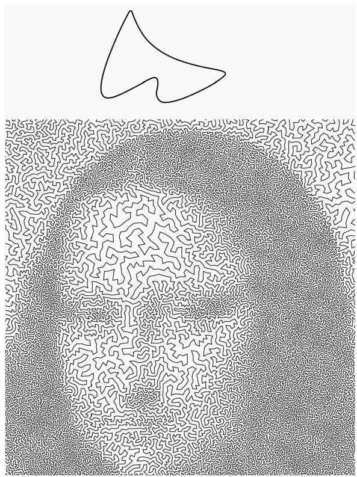
图2.1 若尔当曲线，简单的（上图）和不那么简单的（下图）
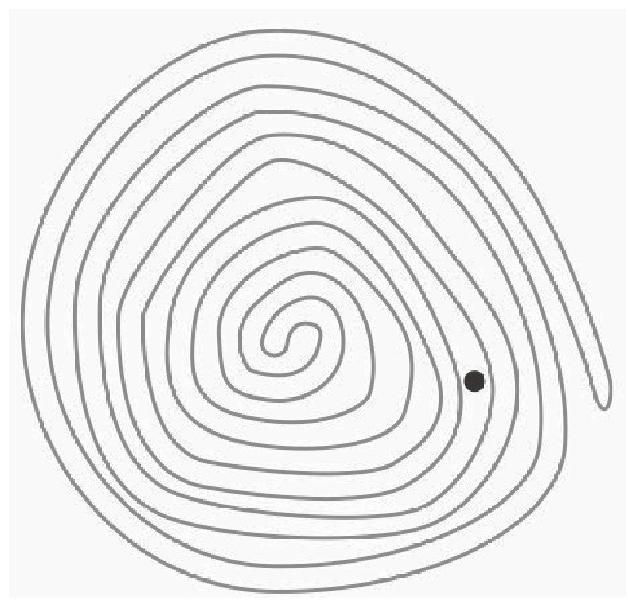
图2.2 点是在曲线里面还是外面？
以图2.2为例，从给定的点出发，“往外”移动穿过曲线（直接穿越，不用绕着曲线留在同一侧），穿越曲线会从内部换到外部，或是从外部进入内部，这样不断穿越直到明显位于外部。通过计算穿越次数，我们就能确定起点位于内部还是外部：偶数次穿越意味着是从外部出发，奇数次穿越则意味着是从内部出发。这个她爱我她不爱我的过程就是奇偶校验的一个例子。
另一个奇偶校验的例子与国际象棋有关。马能不能从棋盘的一个角走到对角，并且在这个过程中经过所有格子刚好一次？不要急着去拿你的象棋，回想一下马的走法，每次移动要么是从白格走到黑格，要么是从黑格走到白格。棋盘上有32个白格和32个黑格，因此走完时所处的格子颜色必定与开始格子的颜色相反，而棋盘上对角格子的颜色相同，因此这样的走法是不存在的。后面还有更多关于走马的内容。
纵横比
矩形的纵横比是矩形的宽度与高度之比。视频和静态的照片使用了各种各样的纵横比，印刷的图像通常需要注意缩放比例。假设我们想将一个矩形分为两半，让每部分都与原来的矩形有一样的纵横比，如图2.3所示。这个想法很具有实用性，比如人们可以缩放海报或传单，在一张纸上复制多份而不会变形。那缩放比具体应该是多少呢？
假设宽度为x，高度为y，对折后的纸要具有相同的纵横比就必须满足
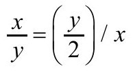
，也就是说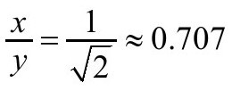
。北美通常使用的信纸纵横比为0.773（21.6厘米×28厘米），差一点点，其他国家大多使用A型纸张。A0纸的纵横比就是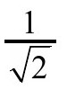
，面积为1平方米。后面的型号（A1、A2等）都是像上面这样从A0纸对折而来，因此有相同的纵横比。A4纸接近北美信纸的大小。这种纵横比的好处早在1786年就被德国科学家格奥尔格·利希滕贝格注意到。图2.3 缩放后
你有多对称？
对称是模式和不变性的几何概念，一直与美和形状联系在一起。最简单的对称是左右对称，又称为镜像对称。左右对称在生物界很常见，大部分动物，包括人，都或多或少具有左右对称，对称轴为径向面，将身体分为左右两半的垂直平面。
有证据表明一些动物更青睐对称的配偶。对于人类的面部对称有许多研究，有一个流行的理论认为对称之所以被视为更具吸引力是因为这表明身体很健康，实验也的确证明了更对称的脸被认为比不那么对称的脸更健康。还有理论认为对称的脸更具吸引力是因为视觉系统更擅长处理对称刺激。另一个理论则认为高度对称的脸表明这个人在发育过程中没有受到过压力。无论怎样，我们在生理上就擅长识别平衡性。
左右对称也是著名的罗尔沙赫氏心理测验（也称为墨迹测验）的典型证据，这个测验被用来评估那些不愿意或不能描述自己思维过程的病人的潜在精神疾病，罗尔沙赫认为对称有助于揭开受试对象的秘密。
勾股定理
勾股定理也许是世界上最著名的数学定理。如果a和b是直角三角形的直角边，c是斜边，则a2+b2=c2。这个公式中的指数2就像是小姑娘头发上漂亮的发带。
数学家保罗·厄多斯在17岁时——后面还会提到他——被邀请到布达佩斯陪伴一位成功商人13岁的儿子。这个小男孩表现出了对数学的兴趣，因此他的父亲想让他多接触这位正冉冉升起的新星。厄多斯经常给这个小男孩讲一些数学问题，其中有这样一段对话：
“你知道多少种勾股定理的证明？”厄多斯问。
“一种。”
“我知道37种。”（霍夫曼，《数字情种》）
据说勾股定理有367种证法，达·芬奇发现过一种，美国总统詹姆斯·加菲尔德也发现过一种。有一种特别优雅的证明，无需公式，用的是覆瓦论证法。图2.4展示了如何用尺寸不同的两种正方形覆盖平面。
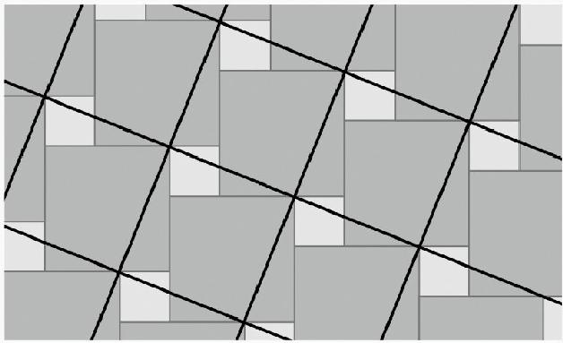
图2.4 用两种不同尺寸的正方形覆盖平面可以证明勾股定理
图中任意一个倾斜的大正方形可以分解成一个中等正方形和一个小正方形。图中三角形的边正好就是不同大小正方形的边，从而证明了勾股定理。这个证法是9世纪阿拉伯数学家阿尔奈里兹和泰比特·伊本·奎拉发现的。
勾股定理不仅在数学领域中影响巨大，在其他领域中也有许多应用，木匠就用它来验证直角是90度，他们称这个原理为勾三股四弦五法则。
勾股定理可以用来证明一个与月牙形有关的结论。月牙形由两条圆弧边组成。海什木月牙是大约1000年前由一位波斯数学家海什木提出的，是由两个月牙形和一个三角形组成的图形（图2.5）。你能证明两个月牙的组合面积等于三角形的面积吗？
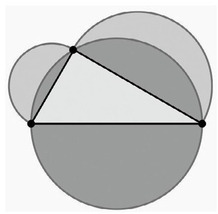
图2.5 两个月牙形的组合面积是否等于三角形的面积
下面的等式符合勾股定理，因此式中的代数式可以视为直角三角形的边：
（m2-n2）2+（2mn）2=（m2+n2）2.
如果m和n是有理数，这个直角三角形的边就都是有理数。三角形的面积是mn（m2-n2）。一个自然而然的问题是：这样的面积可以取哪些值？给定一个正整数N，存在面积为N的有理三角形吗？这个问题被称为同余数问题。如果存在这样的三角形，我们就称N是同余数。
边长为
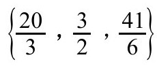
的三角形面积为5，{3，4，5}的面积为6，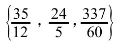
的面积为7。但可以证明面积为1、2、3或4的有理直角三角形不存在。对更大的面积，解答同余数问题更困难，考虑到其中涉及的平方数，问题可以简化为只考虑无平方数因数的N，即N可以被素数p整除，但不能被p2整除。有一个被称为滕内尔定理的方法可以检验给定的N。为了便于陈述，我们定义四个集合：
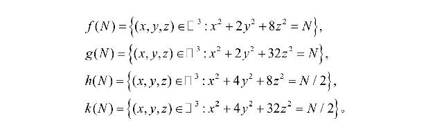
f（N）表示三元组（x,y，z）的数量，三元组中的每一项都是整数，并且x2+2y2+8z2=N。滕内尔定理应用于无平方数因数的N，这个定理说的是，如果N为奇数，则当且仅当f（N）=2g（N）时N是同余数；如果N为偶数，则当且仅当h（N）=2k（N）时N为同余数。对于给定的N，这四个集合都是有限的，因此滕内尔定理可以用计算机通过有限的计算来检验。例如，N=2不是同余数，因为h（2）=2，k（2）=2。而N=5则是同余数，因为f（5）=0，g（5）=0。到2009年为止，一个国际团队已经检验了1万亿以内的所有N。
噢，在这个版本的滕内尔定理中忽略了一个烦人的细节，要让这个定理起作用还需要一个假设：我们要假设BSD猜想成立。这就像是发现你感兴趣的一辆二手车没有发动机，这个细节是致命的。为什么？BSD猜想是克雷数学研究所千禧年大奖难题中列出的六大未解决数学问题之一，只要解决其中任何一个问题就能赢得100万美元奖金，许多数学家都在研究BSD猜想，但估计不会很快解决。
贝亚蒂定理
在第一章，我们见到了常数
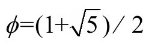
，即黄金比例，现在构造整数序列＜p＞
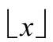
表示x的底，是不超过x的最大整数。换句话说，如果x不是整数，则舍去小数。相邻项之间的间隙是不规则的，因为ϕ是无理数。以这种方式构造的序列称为贝亚蒂序列。如果观察不在这个序列中的正整数，即2，5，7，10，13，15，18，20，23，26，……，
可以发现一个有意思的现象：这个新序列是与无理数ϕ/（ϕ−1）相关联的贝亚蒂序列。换句话说，以
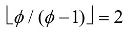
，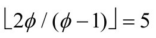
和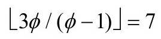
开始的序列本身也是贝亚蒂序列。这两个序列被称为威所夫序列。如果x是一个大的整数，小于x的数中，大约有1/ϕ的数在第一个序列中（我们说第一个序列具有密度1/ϕ），大约有1−1/ϕ的数在第二个序列中。值得注意的是，这种二分现象对于无理数ϕ不是唯一的。瑞利定理（有时也称为贝亚蒂定理）指出，对于任意无理数r＞1，由r和r/（r−1）生成的贝亚蒂序列正好产生每个正整数一次。也就是说，每个大于1的正无理数将正整数分成两类，一类密度为1/r，另一类密度为（r−1）/r。这类结果甚至还可以推进得更远。已经证明贝亚蒂序列包含无穷多个素数。最后我们给出一个有趣的式子，作为对这一节的回应，这个式子将斐波那契数、黄金比例、无穷级数和无穷连分数联系到了一起：
欧拉公式
在角色扮演游戏《地牢和龙》中，游戏者经常使用5种骰子，每种代表一种理想多面体：正四面体、立方体、正八面体、正十二面体和正二十面体。至少在柏拉图以前1000多年，人们就知道了这些多面体（图2.6）。我们可以数一下这些正多面体的面、边和点的数量，将结果列在表2.1中。这些理想多面体的点（V）、边（E）和面（F）的数量之间有什么联系吗？稍加研究就会发现在这5个例子中，都有V−E+F=2。事实上，这个关系对任何凸多面体都成立，这个公式在1750年左右被发现，被称为欧拉公式。让人惊讶的是这个简单的公式过了几千年才被发现，这个公式引导了拓扑学的发展。
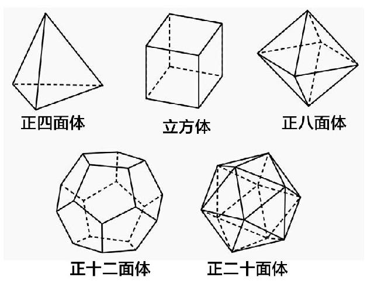
图2.6 理想多面体
表2.1 欧拉公式：V−E+F=2
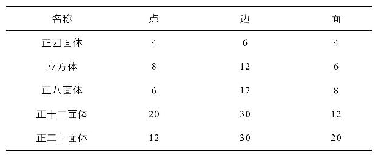
素数问题
整数2还出现在一些著名的说起来容易做起来难的问题中。在1912年剑桥召开的“第5届数学家大会”上，爱德蒙·兰道提到了4个这样的“无法解决的”问题（“兰道问题”，维基百科）。
哥德巴赫猜想
在用相乘的方式得到整数时，素数是基本的建筑材料，但哥德巴赫想的是将素数相加的问题，以他的名字命名的这个著名猜想认为所有大于2的偶数都可以写作两个素数之和。这个问题在1742年被提出，到目前仍没有解决，虽然已经通过计算验证了4×1018以下的数。有观点认为对于大的n，将n写成两个素数之和的方式约为n/（2ln2n）种，这个无限增长的函数意味着大n可以有许多种方式写成两个素数之和。已经证明所有偶数都是最多6个素数之和。2013年，相关的奇数哥德巴赫猜想被证明：所有大于5的奇数都是3个素数之和。陈景润证明了所有足够大的偶数都可以写成一个素数和一个半素数（两个素数之积）之和。
哥德巴赫猜想在一些小说中也客串了一把。小说《佩特罗斯叔叔和哥德巴赫猜想》（道萨迪亚斯，2001）写了一个年轻人与他的叔叔在数学问题上的一些交往。为了吸引眼球，出版商提供了100万美元奖金，谁在两年内解决了这个猜想就能赢得这笔奖金，这是一个很保险的赌注，没有人赢得这笔奖金。
如果你思考一下20或38这样的数，会发现它们无法被写成两个奇的组合数之和，不过38是具有这个性质的最大的数。下面这些等式可以让你信服这个论断：
挤出素数
一个较早提出的与素数有关的结果是柏特龙公设：对所有n＞1，在n和2n之间存在一个素数。这个公设由切比雪夫在1850年证明，利用了函数π（x）的性质，这个函数是小于或等于x的素数的数量。
还有一个更巧妙的证明利用了19世纪分析数论的王冠宝石——素数定理，这个定理是在1896年由阿达马和普森各自独立证明。素数定理说的是
即，当x很大时，π（x）≈x/ln（x）。根据这个定理可以得到，对于很大的n，
因为这个量可以任意大，当n足够大时，就能得出柏特龙公设。
勒让德猜想试图改进这个结果，把素数约束在更狭窄的范围：对任意n＞1，在n2和（n+1）2之间存在一个素数。利用素数定理进行误差估计不足以保证在这些区间内至少存在一个素数，这个问题尚未解决。
孪生素数猜想
欧几里得证明了存在无穷多个素数。狄利克雷进一步证明，如果a和b互素，则集合{an+b：n是正整数}包含无穷多个素数。还有没有其他集合包含无穷多素数？一些素数对，例如（3，5）、（59，61）和（101，103），只相差2，被称为孪生素数。这些素数就像诺亚方舟上的动物一样是一对一对的，而且似乎没有尽头。2011年圣诞节，一个名为素数网格的分布式计算机项目宣布了已知的最大孪生素数：3756801695685×2666669±1。这两个数的十进制表示有200700位。
目前仍未彻底解决的孪生素数猜想，问的是是否存在无穷多组孪生素数。解决这个问题的一条思路与无穷级数有关，一个经典结论是所有素数p的倒数之和
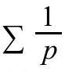
发散。这是一种证明有无穷多个素数的复杂方法。不幸的是，这并没有击中孪生素数问题，布朗定理证明所有孪生素数q的无穷级数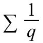
收敛（无论孪生素数猜想是否成立）。这个和，大约是1.902160583，被称为布朗常数。有趣的是，布朗常数曾因撼动Intel而备受关注。1994年，弗吉尼亚州林奇堡学院的托马斯·尼斯利教授编了一些程序生成孪生素数，他发现用他的程序计算布朗常数时，不同的机器计算的结果不一样，他意识到他使用的奔腾处理器有问题，很快发现是在进行浮点数除法时出现了很罕见的错误。那一批次的几乎所有芯片（超过100万片）都有同样的错误，虽然只影响到很少的一些程序，但持续的舆论压力还是迫使Intel更换了所有芯片，Intel为此损失了4.75亿美元。
比孪生素数猜想更强的哈代—利特伍德猜想认为孪生素数的增长与这些素数有类似的形式。如果π2（x）表示小于x的孪生素数数量，这个猜想认为对于很大的x，存在常数C2使得
成立。C2定义为无穷积：
其中p是大于2的所有素数。
2013年5月，孪生素数猜想出现了惊人的进展，新罕布什尔大学的张益唐证明了存在无穷多对N＜70000000的素数（p,q），其中N=q-p。当然，我们希望的N值是2，但是这已经比之前得到的结果好多了。张益唐给出的方法引发了缩小N值的热潮，在2013年夏天，Polymath 8项目几乎每天都宣布一项N值的新纪录，到仲夏时，N已经被缩小到了246。
更快的序列中的素数
最后要说的一个猜想关心的是素数的出现有没有规律。狄利克雷定理证明了没有公因数的数构成的线性序列中存在无穷多个素数。如果序列是以平方增长呢？这就是兰道提出的问题的实质：存在无穷多个形为n2+1的素数吗？目前最好的结果证明了存在无穷多个具有这种形式的最多只有两个素数因子的数。
火腿三明治定理
先来一个问题热热身。奶奶烤了一盘13英寸×9英寸的布朗尼蛋糕，准备和她的两个邻居分享，不过烤的时候，爷爷切了一块3英寸×3英寸的吃了（图2.7）。奶奶很恼火，不过还是想能够一刀把剩下的蛋糕切成面积相等的两块，该怎么做呢？沿着矩形中心和正方形中心的连线切就行。矩形和正方形都被分成了相等的两部分，因此两边的面积是一样的。
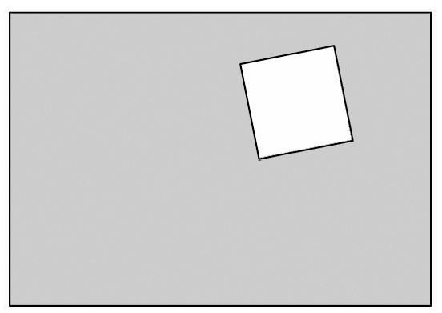
图2.7 如何一刀将阴影部分分成面积相等的两份
火腿三明治定理更具一般性。我们先回头了解一下这个名称的由来，假设有一块三明治，上下两块不规则的面包夹着一片很厚的火腿。有没有办法一刀将面包和火腿都对半分？这个定理认为可以。如果你不喜欢火腿也没关系，这个定理有更一般的形式。对于n维空间中的n个有限物体（物体之间不必相连），总有一个（n−1）维超平面能同时将n个物体对半切分。如果你想在三明治中夹奶酪，可以将两片面包视为一个物体，然后对火腿、奶酪和（组合的）面包应用这个定理。
当n=2时，这个定理的一项应用有时也被称为煎饼定理。放在盘子上的两块薄煎饼（把它们当做二维物体）能够用（平面上的）一条直线同时对半分。奶奶的布朗尼蛋糕问题其实是煎饼定理的一个变体。
煎饼定理的一个离散版关注的是平面上的有限个点。假设这些点是大、小圆盘（图2.8），这个定理指出有一条切割线能将大盘和小盘同时对半分成两部分，如果有一种盘的数量是奇数，则至少有一个盘落在线上。
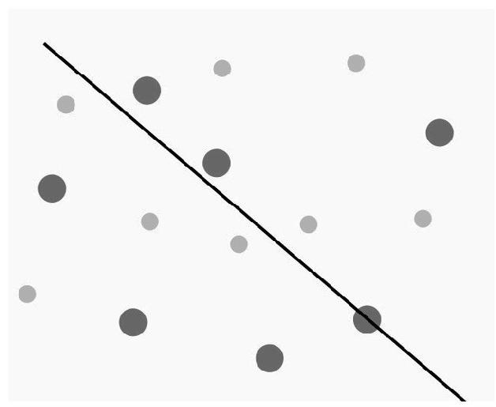
图2.8 将小盘和大盘的集合同时对半分的线
幂集和2的幂
集合S={a,b，c}有多少子集？S只有3个元素，因此全部列出来也不难：
{}，{a}，{b}，{c}，{a,b}，{a,c}{b,c}，{a,b，c}
总共有8个子集（注意第一个是空集，没有元素的集合）。如果不想一一列举，可以思考一下在构造的子集中是否包含某个给定的元素，因为每个元素有两种可能——包含或不包含——而S总共有3个元素，因此前面问题的答案是23=8。当然，这个可以推广：如果S有n个不同元素，则总共有2n种可能的子集。S的子集的集合记为P（S），称为S的幂集。
2的幂在许多场合都有出现。2n是构造康托尔集时n步后的分段数。由于2n是n位二进制数的位组合数量，几乎所有处理器的寄存器宽度都是2的幂（32位或64位最常见）。经典的小麦和棋盘问题以一种戏剧性的方式利用了2n，这个故事有各种不同的描述方式，但都是奖励一个聪明人小麦（或稻谷），棋盘的第一格1粒，第二格2粒，第三格4粒，直到填满。由于1+2+4+……+2n−1=2n−1，因此这位聪明人获得的谷粒数量是264−1=18446744073709551615。这些谷粒堆起来将比珠穆朗玛峰还高，大约是2010年全球稻米产量的1000倍。
2的幂在分治算法中也有出现。分治算法是对问题进行分解（通常是分成两部分），然后对各部分再递归执行这个分解过程，直到分解成足够小可以直接解决为止。有一个简单的例子是在电话簿上查找某个名字（现在还有年轻人知道这个不？）。第一步是判断名字是在电话簿的前半部分还是后半部分，然后对剩下的部分执行同样的过程，拆半的过程不断继续，直到剩下的部分很少，可以直接找到名字为止。（说句题外话，有一个真实的故事，一位高中数学老师在微积分考试中开了一个玩笑，他在试卷空白处贴了电话簿的一部分，其中包括名字“A.Limit（极限）”以及这个人的电话号码。结果这位老师吃惊地发现学生们开始拨打这个电话号码寻求微积分的帮助。Limit先生显然很不高兴）
另一个分治算法的例子是汉诺塔问题（图2.9），有3根直立的柱子，n个大小不等的盘子从大到小叠放在柱子上，目标是将整叠盘子移动到另一根柱子上，移动过程中有两条规则：一次只能移动一个盘子，大盘子不能放到小盘子上面。从图中可以看出，将整叠盘子移过去的过程中包含移动一叠较少盘子的过程。解决n个盘子的汉诺塔问题至少需要2n−1步。解决实际问题的分治算法例子包括对大数据集进行排序（快速排序算法）和分析，分治算法经常是最高效的策略。
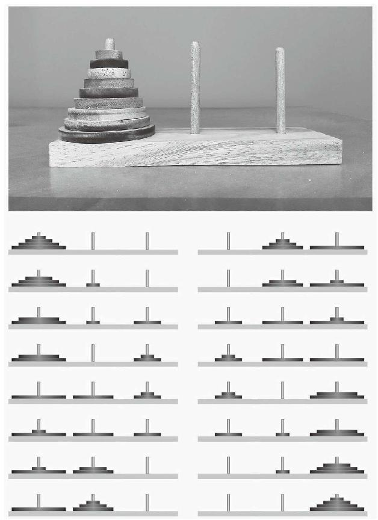
图2.9 汉诺塔难题（上图），以及4个盘子的解法（下图）
在第1章曾讨论过集合，在进入无穷集时，对子集进行计数的问题变得更为有趣。当然，如果集合是无穷集，就有无穷多个子集。那还有没有什么可说的呢？如果两个无穷集的元素之间有一一对应关系，我们就说这两个集合有相同的基数（大小）。说一个无穷集S2比另一个无穷集S1大是什么意思呢？如果S1和S2之间不存在一一对应，但和S2的子集存在一一对应，则S2的基数比S1大。
对于有n个元素的有穷集S，我们知道P（S）的基数是2n。注意对任何n，都有2n＞n。康托尔将这个观察推广到无穷集：P（S）的基数总是比S的基数大。这个结果表明可列集的幂集是不可列的。进一步可以证明，自然数的幂集与实数存在一一对应。同时，康托尔的论证还意味着，可以通过构造幂集生成基数更大的集合。简单地说，这表明无穷大不止2种，而是有无穷多种无穷大。
最后，幂集可以用来证明集合论存在不一致性，至少在目前为止所涉及的浅层次上是这样。假设构造一个所有集合组成的集合S，它包含所有可能的集合，现在考虑S的幂集，由于这个新的集合比S的基数大，它必然也就更大，这样就产生了矛盾。数学思想中的这个含混之处在20世纪早期吸引了很多学者的注意。
西尔维斯特—加莱定理
如果平面上的点在同一条直线上，我们称这个点集共线。如果有穷点集不共线，是不是必然存在一条直线刚好包含其中两个点？这个问题由西尔维斯特在1893年提出，保罗·厄多斯在1943年再次发掘出这个猜想，很快就被他的匈牙利同行蒂伯·加莱解决。
这个问题虽然很容易陈述，直观上也很显然，要给出严格证明却不是那么容易。请注意如果是无穷点集，则这个定理不再成立。为什么？因为可以在平面的所有整数格点上放一个点，这样通过任何两个点的直线必然会通过无穷多个点。
一个稍有区别的问题是，对于n个不共线的点，这种直线的最少数量t2（n）是多少。这个问题到目前仍未解决，最好的结果是，除了n=7之外，
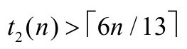
。n=7的情况如图2.10所示。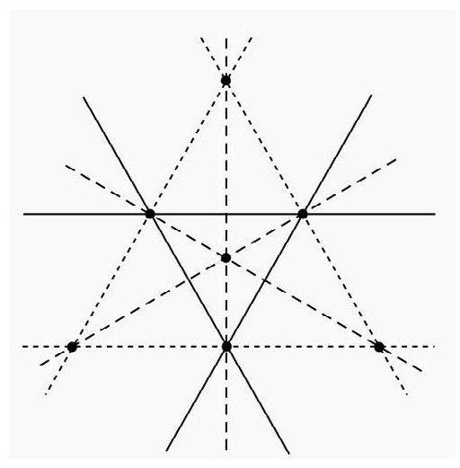
图2.10 有3条直线刚好通过图中点集的2个点
π的公式
π可能是知名度最大的无理数，背诵π几乎成了奥运项目，最近的金牌获得者是丹尼尔·塔梅特，这位英国学者在2004年的圆周率日（3月14日）用5小时9分将π背到了22514位。
有许多用于计算π的公式，包括无穷级数、无穷积和连分式，其中一些公式很诡异地围绕着整数2。下面是韦达公式：
这个公式在16世纪就被证明了，不过利用欧拉在18世纪发现的一个无穷积公式可以得到一个漂亮的证明，令x=π/2，有
另一类公式被称为BBP级数，其中一个公式利用了2的幂：
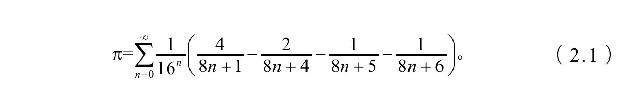
这个公式在20世纪90年代才被发现，它看上去似乎不像其他π公式那样让人印象深刻，而且其他一些π的级数表示收敛速度要快得多。这个公式的价值在于它可以快速计算16进制的π的数字而无需借助前面的数字。2000年，17岁的科林·珀西瓦尔用BBP公式计算了π的千万亿二进制数位，这个分布式计算项目用了250 CPU年，动用了56个国家的1734台电脑。
乘
用乘作为一节的主题，一些人可能会觉得好笑，但这个题目并不是开玩笑，用计算机算两个数的乘积所花费的时间真的很惊人，对乘法效率的任何提升都能给计算带来巨大的好处。
有两个计算两个量的乘积的方法与计算数的平方有关。第一个方法是先对n=1，2，……，2N依次计算n2的值并存储起来，利用公式n2=（n−1）2+2n-1可以高效地执行这个计算，然后在对任意正整数x,y≤N相乘时，利用公式：
由于加和减的计算量比乘要少很多，这个方法比学校教的方法要更高效。有人可能会担心还需要除以4，其实这个计算是用二进制进行，除以4只不过是将数位移动2位。在19世纪曾经制作过200000以下的数的四分之一平方表。
第二个与平方有关的计算方法利用了机械，可以回溯到滑动尺等物理仪器的时代。通过计算平方，可以构造出抛物线y=x2的一部分。现在假设我们想求两个正数x1和x2的乘积，在抛物线上标记点A=（−x1，
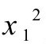
）和点B=（x2，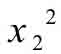
），简单计算就能证明连接A和B的直线通过点（0，x1x2），利用线和铅锤可以制作一个快速计算器，在德国吉森的一家数学博物馆里就有这样一个抛物线计算器模型，见图2.11。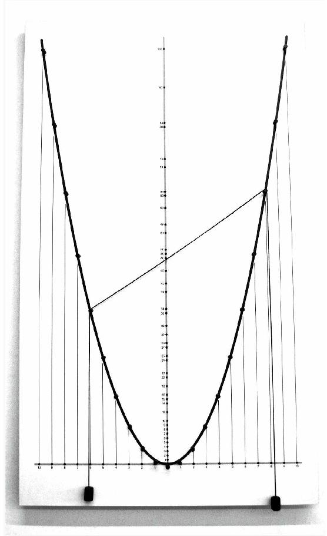
图2.11 抛物线计算器
图埃—莫尔斯序列
场地运动经常有选队员的流程：两位队长轮流选择他们的队员，这个流程显然有利于先选择的队长，有没有更公平的选择队员的办法？
假设队长A和B选择8名队员，最公平的选择顺序要么是ABBABAAB，要么是反过来的BAABABBA。两种方式都尽可能地进行了平衡，只要队员的数量是2的幂，就可以有类似的选择方式。
这种排序与图埃—莫尔斯序列有关，由两种符号——我们取0和1——组成的这种序列有各种等价定义，这种序列的前面几项是0110 1001100101101001011001101001。
序列的第n位tn可以用递归的方式写出，对任意n，有t0=0，t2n=tn和t2n+1=1−tn。可以写成公式：
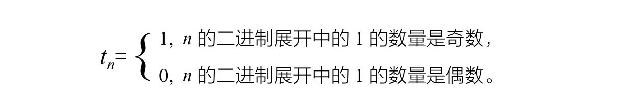
例如，t23=0，因为23=101112。这种用奇数和偶数定义的表示启发了对奇烦数（使得tn=1的n）和偶魔数（使得tn=0的n）的定义：
奇烦数：0，3，5，6，9，10，12，15，……
偶魔数：1，2，4，7，8，11，13，14，……
图埃—莫尔斯序列也可以从单个0开始，然后每一步都对每一位应用规则（0→01）和（1→10），也就是说将0替换成01，1替换成10，几次迭代后得到
这个应用简单规则生成对象的过程有时候也称为林登梅尔系统，简称L—系统，被用于分形几何。图埃—莫尔斯序列也可以定义为满足以下等式的唯一序列{tn}：
图埃—莫尔斯序列还有一些有趣的特性，比如，它明显具有镜像结构，一旦形成了2n项，复制一份然后取位反补码（翻转1和0），附在后面就能得到前2n+1项。很容易证明这个序列不会有3个连在一起的1或0。这个结果有一个惊人的推广：给定0和1组成的任意字串v，图埃—莫尔斯序列中没有3个连在一起的v。在国际象棋中有一条德国规则，说的是如果同一组移动依次出现了3次，就判定为平局。象棋大师马科斯·尤威注意到利用图埃—莫尔斯序列的这个特性可以构造任意长的棋局。
图埃—莫尔斯序列与数论中一个有趣的问题有关，这个问题又回到了选队员的策略，利用偶魔数和奇烦数，注意到
这里的“平衡”现象蕴含着选队员的公平性。这些等式可以漂亮地进行推广：对任意正整数n，有
其中m=0，1，2，……，n-1。这种等式与等幂和问题有关。
对偶
超人漫画中有一个叫做疯狂世界的平行宇宙，在那里存在地球上每一个人的镜像，美貌等优点则被视为缺点。这个让读者感到有趣的思想借鉴自《星际迷航》和《宋飞正传》，而数学中则早就有了平行宇宙的思想，虽然没有情感包袱和邪恶势力。
抽象地说，一一对应是在一个空间（主空间）和另一个空间（从空间）的物体之间进行，这两个空间可能相似也可能不相似，将两个世界连接起来的原因是一些性质在从空间中可能比在原来的主空间中看得更清楚。
对两个世界中的量或物体配对的概念比人们想象的更为普遍，比如将温度单位从华氏转换为摄氏，将距离从千米转换为光年。更有趣的转换来自内尔·哈彼森，他天生全色盲，21岁时，他戴上了电子眼，能将色彩转换为声音频率，传送到植入他脑后的芯片里。哈彼森将色彩的世界连接到了声音的世界。
对偶的例子在数学中比比皆是。最简单的包括将正数乘以-1转换为负数，再乘以-1又可以回到原来的数。如果一个变化在应用两次后能将开始的数变回原来的数，我们就称之为对合。另一个对合的变换例子是求非零数的倒数，比如，5变换为
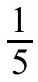
，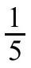
又变换为5。圆反演是更复杂的对合的例子。圆反演由几何学大师施泰纳在1830年发明，变换方式是点（a,b）变为
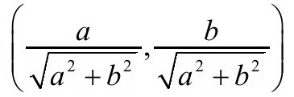
。在这个变换中，单位圆内的点会变到单位圆外，圆外的点则变到圆内。另外如果我们考虑整个集合的变换，会发现不与原点相交的圆会变换成圆，与原点相交的直线也会变换成圆。在18世纪，精密加工需要直线导向，1864年发明了波塞里亚—利普金连杆（图2.12），这种机械结构利用圆反演将圆弧运动转化为直线运动，这种结构在蒸汽机的发展中起到了重要作用。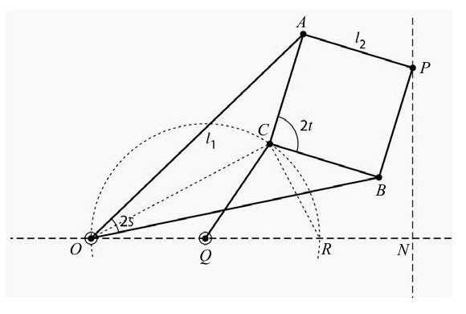
图2.12 波塞里亚-利普金连杆
最后一个对合的例子与图有关，图2.13给出了一个图G和它的对偶图G′。构造对偶图G′是在G的每一个面上放置一个点，包括没有包围的区域，对这些新的点，如果两个点所在的面之间有一条公共边，就用一条边将这两个点连起来，连成的图就是G′。构造对偶图是一种对合，因为G′的对偶图就是G，你可以用图2.13自己检验一下。
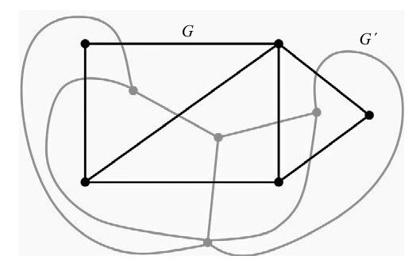
图2.13 图G和它的对偶图G′
我们来看看G和G′的性质有什么关联，一个图中的点如果可以分为两个集合，比如A和B，使得图的所有边都是连接A中的一个点和B中的一个点，我们就称这个图为二分图。二分图的例子在实际中很常见，例如以组织和个人作为点，用边连接个人和个人所属的组织得到的图（假设每个人至少属于一个组织）。如果一个图中存在一条由边组成的路径能遍历整个图，则称这个图为欧拉图。有定理证明了图G是二分图当且仅当它的对偶图G′是欧拉图。
阿波罗圆填充
在第1章我们看到可以用不同大小的正方形填满一个大正方形，矩形也一样可以。那么曲边组成的形状呢？似乎不可能，不过我们可以将这个思想扩展到允许无穷多片。
让3个圆相互靠在一起，两两之间刚好有一个点接触。在图上可以构造出两个特殊的圆，一个在3个圆围出的空中，与3个圆相切，另一个则将3个圆包围起来，也与3个圆相切。这两种4圆集合都被称为笛卡儿构型（图2.14）。
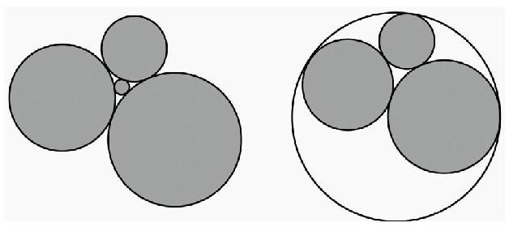
图2.14 两种笛卡儿构型
如果圆的半径为r，则圆的曲率定义为
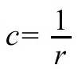
，这容易理解，因为半径越大圆越大，弯曲程度就越小。笛卡儿发现了笛卡儿构型中4个圆之间的奇妙关系：给定c1，c2和c3，笛卡儿方程会给出两个c4值，这两个值分别对应内嵌圆和外包圆的曲率。外圆的曲率会是负值（有时候也称为有向曲率）。用代数就能证明，如果最初3个圆的曲率和外圆的曲率都是整数，则内嵌圆的曲率也是整数。魔术才刚刚开始。可以继续构造内嵌圆，每个的曲率都是整数，最后无穷多个圆会填满所有空隙。这样用无穷多个圆填满一个圆被称为阿波罗圆填充，图2.15展示了两种可能，圆中的数字表示曲率。
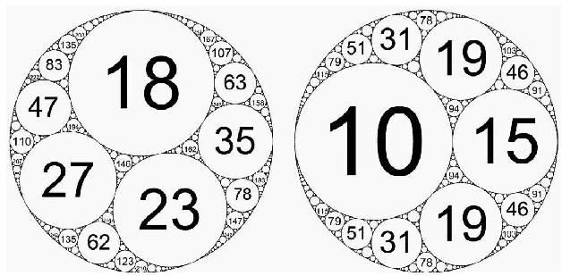
图2.15 两种阿波罗圆填充
笛卡儿方程可以推广到更高维，不再是3个圆内嵌一个圆，而是4个球面内嵌一个球面。事实上，在n维空间中，用n+1个超球面可以内嵌另一个超球面，此时笛卡儿方程稍有变化。索迪高塞定理证明，n维空间中n+2个相互相切的超球面的有向曲率
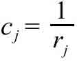
满足完全数和梅森素数
如果数n的因数（包括它自己）之和等于2n，就称n为完全数。古希腊人就知道前4个完全数：6，28，496和8128。如果2p-1是素数（称为梅森素数），则2p−1（2p−1）就是完全数。欧几里得猜想所有偶完全数都是这种形式，这个猜想后来被欧拉证明。由于还不知道是否有无穷多个梅森素数，因此无法用它来证明有无穷多个完全数。
对梅森素数到底知道多少呢？首先注意到如果Mp=2p-1是素数，则p必须也是素数，因为如果p=ab，其中a,b＞1，则
最后的式子有因数2a-1，因此2p-1不是素数。很容易验证当p=2，3，5或7时，Mp是素数。M11不是素数，因为M11=23×89。当p=13，17和19时，Mp也是素数，但过了很久才由欧拉找到下一个梅森素数M31。对于更大的p,Mp的值增长得很快，因此用常规方法检验是不是素数需要很长时间，但由于Mp的形式特殊，因此发展了一种特殊的检验法——卢卡斯—莱默检验法——来检验梅森数是否是素数。随着计算机技术的发展，可以检验越来越大的p值，20世纪90年代启动了大互联网梅森素数搜索（GIMPS）的分布式计算项目，由志愿者分享他们的计算机用于搜索梅森素数。2013年发现了第48个梅森素数M57885161，这个数有17425169位。由于卢卡斯—莱默检验法的高效性，已知的最大素数几乎总是梅森素数。
最后一项事实将完全数与整数2联系起来：如果n是完全数，则
也就是说，n的因数的倒数之和等于2。
五度相生律和2的平方根
毕达哥拉斯除了以他的定理闻名，还发明了调音法，不过现在他的调音法已经被取代了，不像他的定理那样不朽。
如果两个音相差一个音阶，高音的振动频率就是低音的两倍，这个原则沿用至今。两个音之间的“半程”音称为“纯五度”。毕达哥拉斯将纯五度与前一个音的频率比定为3/2，不过稍加分析就会发现这个比会带来问题。让我们来看看为什么。
假设我们想给钢琴调音，中央C音被认为是准的，上面的G音可以用3/2规则调谐，G后面是D，与中央C的频率比是（3/2）2=9/4。下降一个音阶，中央C上面的D的频率比为9/8。类似的步骤可以推出E与C的比为（9/8）2。继续这个过程，可以求出F#，G#，A#以及最后的C相对于中央C的比，这会得出荒诞的2=（9/8）6。虽然比较接近，因为（9/8）6≈2.027，但是误差会累加。
即便不懂算术，音乐家们也知道五度相生律不准，有时候会感觉听到的音不协调。在15世纪末，12平均律的思想出现了，这个方法提出每一对相邻的音都有相同的频率比，一个音阶有12个音，相邻音的比是21/12。这个方法在数学上具有一致性，也给音乐带来了好处，值得注意的是，五度相生律的毕氏比例，3/2=1.5，很接近平均律的比例27/12≈1.4983。
不清楚为什么毕达哥拉斯不用2的幂调音，不过考虑到27/12是无理数，也在情理之中，因为毕达哥拉斯和他的追随者排斥无理数的思想，据说因为希帕索斯证明了
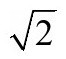
是无理数，毕达哥拉斯的门徒把他丢到了海里。真不敢想象毕达哥拉斯会怎么看待超越数！在证明
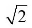
是无理数的方法中，最迷人的是用几何图形，证明用的是反证法，假设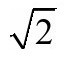
是有理数，最终得出一个荒谬的结论，从而证明假设是错误的。我们可以假设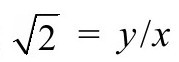
，其中x和y是某个正整数，根据勾股定理，我们可以构造边长为x,x和y的直角三角形（图2.16）。从B到D画一条圆弧，将斜边分成两部分。圆弧在点D的切线与三角形的底边相交于点E。对称性表明ED=BE。现在我们有了一个新的直角三角形CDE，边长分别是y-x,y-x和2x−y。关键在于注意到这个新三角形的边长必须也是正整数，但要比三角形ABC的对应边短。从这个小三角形出发，又可以重复同样的过程，产生出更小的相似三角形，边长为更小的整数。很显然这个过程无法永远继续下去，因此就得出了矛盾。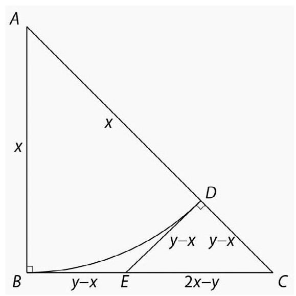
图2.16 2是无理数的几何证明
一些数学家很反感反证法，为此需要找到一个构造性方法证明
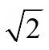
不同于任何有理数。要做到这一点，先假设a和b是正整数，注意到2b2可以被奇数个2整除，a2则可以被偶数个2整除。这意味着2b2和a2必定不同，因此|2b2−a2|≥1。这迫使从而证明了
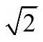
和任何有理数总有差别。关于
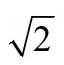
的另一个有趣的事实是：可以用它来证明存在无理数a和b使得ab是有理数。怎么证明？考虑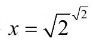
。如果x是有理数，则已证。如果x是无理数，则从而得证。最后，
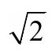
无穷叠加的“塔”会构成一个惊人的公式：平方反比定律
牛顿万有引力定律的简洁有力的陈述是
说的是质量为m1和m2的两个物体之间的引力与物体之间距离的平方成反比。这不是遵循平方反比定律的唯一物理现象，库仑定律测量两个物体之间的静电力：
其中q1和q2是两个物体的电荷，r是它们之间的距离。一般来说，如果从点源发出的波的强度在球面波上均匀分布，则平方反比定律成立，因为球体的表面积与半径的平方成正比。
引力的平方反比定律不仅仅是显得漂亮（就公式而言），一个惊人的推论是牛顿壳层定理，它分为两部分。首先，均匀的球形壳（空心球的表面）通过重力吸引外部物体时，就好像所有物质集中在壳的中心。推论是，各层均匀的实心球对外部物体的吸引等同于点质量。行星因此可以被视为点质量，使得计算更容易。壳定理的第二部分说的是，均匀的球形壳对壳内的物体没有重力效果，就好像物体漂浮在空间中一样。双管齐下的壳层定理是牛顿定律的自然推论。事实上，这个推论很强，以至于可以反推：如果壳层定理成立，则重力必须满足平方反比定律。
算术几何平均不等式
如果一个电影角色需要在黑板上乱写一点东西来展示数学能力，他或她会写什么？大多数人会想到一个方程，比如爱因斯坦的标志性公式E=mc2。方程被认为是天才的标志，不等式则往往被忽视。最常用的是算术几何平均不等式少不了整数2，对于任意两个正数a和b，算术平均值为（a+b）/2，几何平均值为
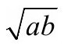
。算术几何平均不等式说的是算术平均值不会小于几何平均值，它们只有在a=b时才相等。最简单的证明是基于等式最后一项不会为负，因此不等式成立。
我们可以应用不等式两次。如果0＜x＜y，令y1为x和y的算术平均值，x1为几何平均值。根据不等式可得y＞y1＞x1＞x＞0。现在从x1和y1开始，重复同样的过程，可以生成递增序列{xn}和递减序列{yn}，这个过程可以简写为
可以证明
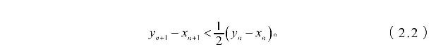
因此两个序列相互很快逼近，共同的极限就是x和y的算术几何平均值。将这个极限记为AGM（x,y），它具有以下性质：
让人吃惊的是，这个函数与椭圆积分有关，
AGM函数可以用xn和yn的几步迭代数值计算这个积分。例如，只需计算几项xn和yn就可以看出AGM（1，）≈1.198140235（表2.2）。
表2.2逼近AGM（1，）
加粗的数位表示正确的位。式（2.2）可以用下面的等式
修正。平方意味着准确的数位在每一步会加倍，这使得快速计算成为可能。
正多项式
如果要求学微积分的学生证明多项式x4+6x3+2x2−34x+41不会等于负数，他或她很有可能会对函数作图，或者用标准的求导方法找函数的最小值。这个证明可以简化，如果学生知道
既然这个多项式可以写成平方和，它就不可能为负。但总可以这样做吗？不会为负的实系数多项式p（x）总是可以写成两项的平方和？是的！
证明是用的代数基本定理（n阶多项式刚好具有n个复数根）。我们可以将一个多项式代数表达为一次因式的乘积
其中r1，r2，……，rn是复数，C是实数。由于P（x）的系数是实数，因此复数根必定成对共轭：如果a+ib是根（a和b为实数），a-ib也是。与这两个根对应的一次因式的乘积可以写成
通过将所有成对复数根的一次因式乘到一起，可以将式（2.3）写成形为（x−a）2+b2的二次项的乘积，然后可以迭代使用婆罗摩笈多—斐波那契恒等式
将所有项合并为两个平方项之和。因此，我们可以将任何非负的实系数多项式写成两个多项式平方之和。
这个漂亮的结果不能扩展到具有两个变量的函数。这个结果是希尔伯特发现的，但他给出的反例不是构造性的。他能够证明存在这种函数，但没有给出具体的例子。后来到了1967年才由西奥多·莫茨金给出了一个例子。函数P（x,y）=1−3x2y2+x2y4+x4y2（图2.17）非负，但是无法写成多项式平方之和。
图2.17 莫茨金多项式的图
牛顿法求根
牛顿以他的万有引力定律、运动定律和发明微积分闻名，鲜为人知的是以他命名的求根法。
求函数f（x）的根——方程f（x）=0的解，最朴素的方法是二分法。这是一种应用于区间[a,b]上的函数f（x）的分治方法，其中f（x）是连续的，值f（a）和f（b）的符号相反。函数连续性确保函数在[a,b]中的某处等于零。在这个过程中的每一步，区间被二等分，并且我们可以知道函数在两个对分区间之一的某一点处等于零。对这个过程进行迭代可以得到包含f的根的越来越窄的区间。
虽然二分法有效，而且很容易用计算机实现，但还是嫌慢。每一步平均可以得到log102≈0.3位准确的十进制位。与之相比，牛顿法可以说是快如闪电。牛顿法中采用的迭代公式的导数具有简单的几何性质。首先假定根值为x=x0，曲线y=f（x）在点（x0，f（x0））的切线是y=f（x0）+f′（x0）（x−x0），假设这条线在x=x1处穿过x轴，将这个点作为我们下一步对根的逼近，并且满足等式
现在从x1开始，执行同样的过程找到下一步对根的猜测x2。继续这个过程，我们可以将xn写成xn−1的表达式：
那么牛顿法比二分法快多少呢？一旦我们接近了根，十进制小数点后面准确的数位每一步都大约会倍增。这使得求根可以很精确。需要注意的是，如果初始猜测距离根太远，牛顿法可能会失败，有时差距很大。还有其他求根方法，每一步产生更多的数位。哈雷法——以预测哈雷彗星出名的埃德蒙·哈雷命名——每次迭代可以将准确数位增长3倍，然而，每一步所需的计算量要比牛顿法的两次迭代还要多。在许多场景中，牛顿法是已知最快的求根方法。
牛顿法应用的常见例子包括求均方根和高阶多项式的根。一个新的应用是快速求数的倒数。长除比乘法的计算量更大，但牛顿法可用于用乘法逼近数的倒数。怎么做？要计算1/D，从函数f（x）=1/x−D开始，少量代数计算就能看出牛顿迭代式为
其中不需要相除！
与牛顿法有关的一个自然的问题是关于各零点的吸引域，也就是说，如果是f的零点，在采用牛顿法时，哪些初始值x0最终会落到？以函数f（x）=x3-1为例，这个方程有3个根：x=1，和。利用牛顿法，我们发现画出来的各个根的吸引域展现出一幅惊人的图景（图2.18）。逼近同一个零点的点集用相同的灰度表示，不同区域之间的边界点被称为朱利亚集，以复数动力学的先驱加斯顿·朱利亚命名。朱利亚集中的点以混沌的方式在朱利亚集中相互迭代。
图2.18 x3-1的零点的吸引域
再说乘除
我们在牛顿法一节已经遇到了相除的问题，并且知道了除可以替换为几次相乘，另一种除的技巧在精神上是类似的：
如果，则分子的n项以相对误差2−n逼近相除结果。对所有|x|＜1，这个包含2的幂的公式可以无限扩展为无穷积：
通过展开这个无穷积可以换一个视角。展开后各项x的幂的系数等于1，因为每个正整数都有唯一的二进制表示。这表明无穷积等于1+x+x2+x3+……，即1/（1−x）的几何级数表示。
π2/6的诱惑
未解决的数学问题通常以提出它的人命名。但1644年提出的巴塞尔问题的名称来源不清楚，巴塞尔的杰出数学家伯努利家族可能是这个问题的提出者，不过另一位巴塞尔居民欧拉在1735年解决了这个问题。
那么什么是巴塞尔问题呢？它问的是一个无穷级数的具体值
将这个级数的一截与另一个级数进行比较，不难看出这个级数必然收敛。
注意到无论n多大，部分和绝不会大于2，因此无穷级数必然收敛。
要证明一个无穷级数收敛往往不难，求收敛级数的具体值则是另一回事。没有明显的理由能够解释为什么（2.4）式的求和会具有一个干净利落的形式，因此在欧拉给出结果后有人悬赏了双倍奖金。
这个惊人的求和现在有许多证明，用到了各种技巧：单重积分、多重积分、傅里叶级数、三角函数的级数表示、无穷积，甚至数论函数。欧拉也注意到他的结果能用于将幂2替换为偶数幂2k后的求和：
其中R2k是有理数。你可能会想是不是所有这类问题都可解，然而3次幂求和
就还没有解决。事实上，直到1979年，才证明这个数——通常称为阿培里常数——是无理数。
等式（2.5）也表明任何小于π2/6的正数都可以写成只包含平方倒数的无穷级数和。这个结果有一个不太显而易见的推论。假设r是位于两个区间[0，π2/6−1]或[1，π2/6]中的有理数，则r可以表示为平方倒数的有限项之和。
π2/6还出现在另一个非常不同的场合。如果随机选择两个正整数，它们互素的概率有多大呢？换句话说，它们没有公因数的可能性有多大？具有公因数意味着有共同的素因数，因此这个问题可以简化为：两个数不同时具有因数2的概率是多少？随机的整数有1/2的概率为偶数，两个数都是偶数的概率是（1/2）2，因此两者不同时为偶数的概率是1−（1/2）2。类似地，两个数不同时具有素因数p的概率是1−1/p2。由于对任意两个素数的这个概率相互独立，因此结果可以合并：两个随机数互素的概率是无穷积
其中p涵盖所有素数。怎么估计这个式子的值呢？首先，用无穷级数表示式（2.6）中的项，可得
然后，可以让老朋友欧拉帮助我们。根据算术基本定理，每个正整数都有唯一的素数分解，欧拉意识到展开式（2.7）的积可以得到所有正整数的平方倒数：
现在我们可以利用巴塞尔问题的答案。两个随机选择的数互素的概率是6/π2。数学上，欧拉是当然的首席提琴手。
雅可比猜想
在地图上精确描绘各个国家的问题一直困扰着制图员们。将球面投影到平面有一个明显的问题是环绕的表示：法国可能不再与西班牙毗邻（或者堪察加半岛与阿拉斯加分开）。虽然只关注局部区域（比如中美洲）没有这个问题，但这个问题无法回避。所有投影都会引入某种扭曲，比如常见的墨卡托投影（图2.19）使得格陵兰岛看上去比非洲还大，而实际上非洲的面积是格陵兰的13倍。投影最好是能保持面积不变。这样的例子包括莫尔韦德投影、桑森—弗兰斯蒂投影、锤投影和艾克特第四投影。
图2.19 采用墨卡托投影的世界地图
等面积投影会有什么数学性质呢？与其考虑球面到平面的投影，不如先考虑一下更简单的平面到平面的变换。举个例子，定义一个（x,y）平面到（u,v）平面的变换，u=2x,v=y/2。如果（x,y）平面是一块橡皮，这个变换会将橡皮在水平方向上拉伸1倍，垂直方向上压缩一半。在这个变换中，任意区域的面积都会保持不变。
还有许多变换也能保持面积不变。一个更复杂的例子是u=x+f（y），v=y，其中f可以是任何函数。从数学上来说，任意区域的面积保持不变是因为变换的雅可比行列式等于1。这个条件等价于等式
对于变换有一个期望的特性是可以“变回来”。这总是可能的吗？在函数论中有一个更基础的定理是反函数定理：如果等式（2.8）在某个点成立，则相应的变换在这个点附近可以反变换回来。不过，如果等式（2.8）在整个平面都成立，则无法确定是否存在一个函数可以整体地反变换回来。例如，变换u=x+f（y），v=y可以用x=u−f（v），y=v反变换回来。但是，函数
就无法整体反变换，即便等式（2.8）能够成立，点（x,y）=（0，0）和（x,y）=（0，2π）都映射到。这是不是表明等式（2.8）没有告诉我们什么东西？不要那么快下结论。也许如果我们限于某一类函数，就能得到所期望的可逆性。1939年，科勒尔提出猜想，如果变换是多项式，则全局可逆并且反变换也是多项式，这个问题被称为科勒尔—雅可比猜想，至今仍未解决。虽然普遍认为这个猜想在二维情形下成立，但有人认为在更高维的情形中不成立（虽然也还没有找到反例）。菲尔兹奖得主斯蒂芬·斯梅尔认为科勒尔—雅可比猜想是21世纪最重要的数学问题之一。